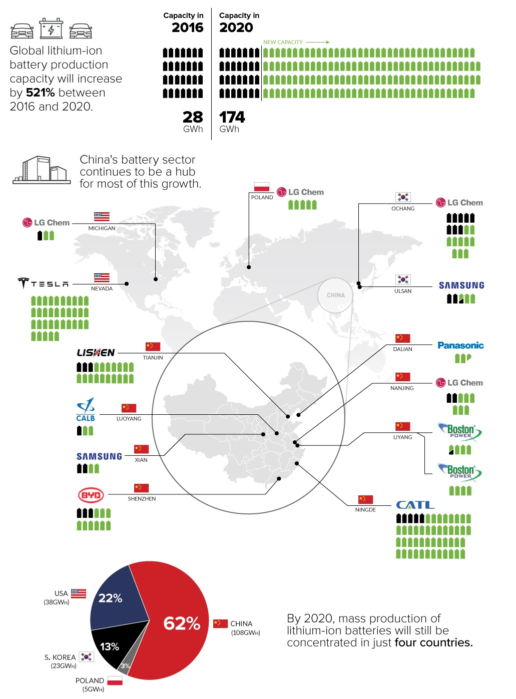

Take-away 1:
The long development time to reach manufacturing scale and slow advancements with li-ion have culminated in only gradual improvements with no huge leaps in innovation. With a multitude of start-ups, funding is distributed among them, but few of these startups receive enough funding to develop their own manufacturing lines. The odds seem stacked against clean energy. Furthermore, many of these startups taking deep dives with early-stage technologies that may have a lot of potential, follow similar trajectories: either they go bankrupt or acquire an industrial partner, often foreign, and often Chinese. In order to accelerate development to put a product on the market, they rush to integrate the battery technology into a conventional manufacturing line, further restricting potential developments and as a result stifling innovation. While the launching of so many startups may seem like a “shotgun approach” to next-gen energy storage, each new venture and step is very calculated, each generation of serial entrepreneurs tweaking their strategy based on previous shortcomings. Numerous technical challenges remain, but each technology must be taken through to commercialization or until funding runs dry to determine whether it is the breakthrough.

Source: VisualCapitalist (data by Benchmark Mineral Intelligence)
Take-away 2:
For better or worse, the Big Three (LG Chem, Panasonic, and Samsung) are taking only safe bets, making no radical changes in chemistry. This strategy is the result of: perceived risk in next-generation technologies and an already well-established (profitable) market for li-ion batteries with consumer devices such as mobile phones, drones, and toys. While the advantages of making a product at scale set in just above $12 million in revenue, several hundred million dollars is required to merely build the manufacturing plant capable of handling that level of volume. Herein, lies the paradox for clean energy: there is a significant gap that must be cleared by early-stage energy storage startups in order to simultaneously bring a product to market and scale up quickly enough to remain in the green. As a result, few early- and mid-stage startups can successfully bring a product to market and generate profit, while remaining fully independent from larger conventional cell manufacturers.
Limits of Li-ion
The realm of li-ion is already at a high degree of maturity after numerous developments since 1980s in the consumer devices market. While there may be new cell components, conductive additives, and electrolyte development that improve the thermal stability and extend the battery’s lifetime by mitigating the degradation of cell materials, the fundamental chemistry will not change significantly. The cathode active materials are the key component of li-ion batteries for maximizing energy density, but they also contribute to a significant portion of raw material cost. As a result, li-ion batteries energy density is steadily approaching an upper limit, while cost is steadily approaching a lower limit. New cathode active materials with novel structures that enhance diffusion pathways and other fun stuff would be required to make any notable improvements in energy density, but significant work with theoretical and computational materials science have for the most part exhausted possibilities of new materials for li-ion storage and diffusion. Thus, there are not expected to be further drastic improvements in the power and energy able to be stored and delivered by this class of batteries.
Research Beyond Li-ion: Mid-Term Outlook
While many of the startups highlighted previously in this article have demonstrated a proof-of-concept for a range of technologies at various stages of maturity, a large portion of mid-term academic research is focused on the higher energy density lithium-metal and sodium-metal battery chemistries. Much directed research is conducted in China and South Korea, which are also unsurprisingly manufacturing hotspots. Despite a big bump up in energy density, safety is the primary pitfall with lithium-metal batteries, and li-ion batteries have already raised significant concern with recalls, fires, and explosions, plaguing even big players in the industry like Tesla, GM, and Samsung. Research teams at universities and companies alike have pioneered solid-state electrolytes that could complement lithium-metal batteries by improving stability and safety.
Research Beyond Li-ion: Long-Term Outlook Flow batteries similar to those being developed by Baseload Renewables and other startups are capable of long discharge durations and can be relatively inexpensive, depending on their material feedstock. For this reason, they would be well-suited for stationary commercial and residential grid applications.
Flow batteries similar to those being developed by Baseload Renewables and other startups are capable of long discharge durations and can be relatively inexpensive, making them ideal for stationary commercial and residential grid applications. Several research teams have prototyped flow batteries with earth-abundant materials like iron and plant-derived substances, which would have minimal environmental impact even at scale.
In the realm of high energy density mechanisms that would parallel li-ion for EV applications, one research group from Lawrence Berkeley National Laboratory is actively using theoretical and computational materials science to assist in materials discovery and understand possible energy-storage mechanisms (Ceder Group). Understanding of these fundamental thermodynamics will allow for determination of future possible energy storage chemistries.
Chemistries for uber high-energy density applications are certainly possible (often using nanotechnology), but only seem to be viable for niche applications like super-secret CIA drones or NASA spacecraft because they are cost-prohibitive. As many experts have mentioned , it will be a battery of choice since it is difficult to maximize all desirable performance benchmarks.
A mindset of skeptical optimism
It is a safe bet to predict that lithium-ion or lithium-metal will be the preferred battery chemistry for EVs of the future, but the specific components used and manufacturing methods employed could be anybody’s guess. As for grid energy storage, a low-cost, long-discharge, high-reliability energy storage technology like a flow battery will likely enable the wind-/solar-powered, distributed grid networks that power engineers and blockchain strategists are dreaming up. If there is a hope for such systems replacing natural gas or coal power plants and for EVs replacing combustion engine vehicles, claims of sustainable green energy raise the question of these manufactured materials’ footprint. That is, where are these materials sourced from? Are they sourced ethically and from a long-term sustainable supply chain? What are the technical challenges in recycling and recovering rare-earth materials? These are all questions that will be addressed in an upcoming article.
Chief researchers driving development have their hand in early-stage development at many multiple ventures as they overcome roadblocks and emerge from bankruptcy; old manufacturing facilities from failed start-ups are re-purposed for new ones; funding is pieced together between federal grants, various consortia, venture capital, and in some cases multinational companies, each with their special interest and target application. Everything in this venture may seem hodge-podge, but one must recognize this space is not suited to the quick results that venture capitalists might be looking for in other areas like software or app development. Significant material investments and commitments must be made before a technology may even be deemed commercially viable, accounting for the ephemeral nature of many of these startups when funding finally runs out.
If the answer does not lie in the U.S., maybe it is in China, where much of the funding and the drive is coming from. Even if novel research originated in the U.S., startups must follow the funding to stay afloat, regardless of the source, and the risk in execution often lies in scaling up manufacturing capability.
From a birds-eye view, it can be almost frustrating to watch how slow things progress in this realm. Why can we not just mash up all the benefits of each technology (fast charge, long lifetime, etc.) in one neat package? Why is there no true universally-compatible drop-in for manufacturing lines? Why can we not combine the flexibility of a R&D startup with the streamlined efficiency and resources of a full-scale commercial company? It is a complex system with many variables and many approaches taken from different angles, but we must remain confident that the confluence of bright minds or at least one venture will realize and commercialize a worthy solution.
1B. Dunn, H. Kamath and J.-M. Tarascon, "Electrical Energy Storage for the Grid: A Battery of Choices," Science, vol. 334, no. 6058, pp. 928-935, 2011.